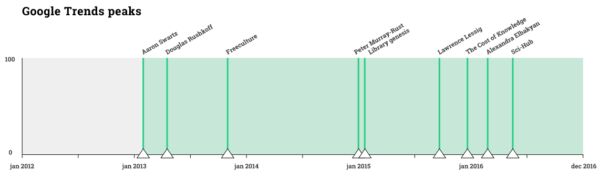

Description
Actors relationships are important to understand links between them or between clusters of similar actors. Are there tendencies? Do connections with a certain node grow or decrease? This protocol is spotting these changes, focusing on the most linked website, which have been displayed in the middle of the visualization.
To define the time range, we searched all the actor in Google Trends to understand their online relevance. Spotting the peaks, we could determine the range in which relevant events happened. The first and the last peaks, occurring in 2013 and 2016, have been used as extremities of time range. Relationships have been analyzed in four different years (2013, 2014, 2015, 2016) to provide a snapshot of how actors are related in that precise moment and eventually underline differences over time.

The external circle is composed by minor nodes that point to other nodes. For a cleaner result, nodes were filtered excluding all the nodes whose Indegree value was lower than 3. Color codes refer to the typology of website: social networks, database, open culture related websites.
The comparison of the 4 networks shows an unexpected outcome. While the goal was to spot differences in relationships, we noticed through the years a significant growth of links leading to Creative Commons official website. This could be interpreted only as a growth in the release of contents under CC licenses, since they have to embed the link to the text of the license to be legally effective.
We were looking for relationships, but we found an effect, a consequence, of the controversy debate.